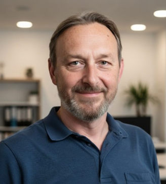
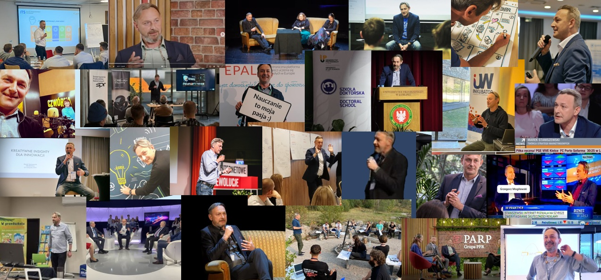

Marek Staniszewski — założyciel Heuristici, firmy doradczo-szkoleniowej z Warszawy. Prowadzę szkolenia AI, warsztaty strategiczne i projekty automatyzacji dla firm.
Od 30 lat zajmuję się strategią, komunikacją i rozwojem marek. Doświadczenie zdobywałem m.in. w międzynarodowych agencjach reklamowych (Ogilvy, Young & Rubicam, Havas), jako dyrektor strategii, wiceprezes oraz szef marketingu Canal+.
Obecnie specjalizuję się w wykorzystaniu sztucznej inteligencji w biznesie, marketingu i procesach strategicznych. Prowadzę szkolenia, warsztaty i projekty doradcze z zakresu generatywnej AI, prompt engineeringu, automatyzacji oraz projektowania systemów opartych na LLM.
Pracuję na styku strategii, technologii i kreatywności – pomagając organizacjom lepiej rozumieć zmieniający się świat oraz budować praktyczne kompetencje przyszłości.
Jestem autorem książek dotyczących strategii i kreatywności, m.in. „Atlas strategiczny”, „Strategiczny podstęp” i „Tak na marginesie strategii”, a także współautorem „Portretu klienta”.
Tworzę również autorskie narzędzia rozwojowe i kreatywne wykorzystywane przez trenerów w pracy szkoleniowej i warsztatowej: „Karty Inwencji”, „Karty Opowieści”, „Karty Transformacji”, Karty PersonaliTY, Karty Vita Inspira, Ko-Kartki (KO i KT jako współautor).
Należę do Rady Ekspertów THINKTANK i SUPERBRANDS. Interesuję się filozofią, kognitywistyką, procesami twórczymi oraz wpływem AI na kulturę, komunikację i sposób podejmowania decyzji.
